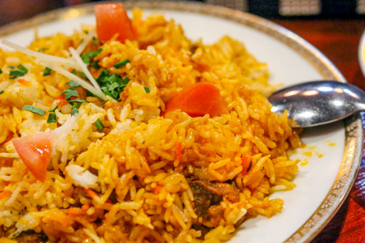

Jollof

The best jollof in town
Jollof is a delicious meal made from rice and tomato stew and it's consumed
by almost people around the world and it's most enjoyed by Africans.
As a Ghanaian, I personally prefer
jollof to other Ghanaian meals.
This meal also enjoyed by Nigerians the most and its recipe raises
"a-kitchen-banter" between Ghana and Nigeria sometimes.Though I
like this meal its recipe is another thing that causes some people a bit.
Bellow is the list of ingredients ued for the recipe:
- Rice
- Water
- Fresh Tomatoes
- Tomato paste
- Onion
- Salt
- Pepper
- Cooking oil
- Chicken
- Mackerel
- Eggs
Bellow is the list of steps to prepare the dish:
- Combine tomato, red bell pepper, chili and water in a blender for the sauce.
Blend on high until smooth and set aside.
- Heat cooking oil in a saucepan over medium heat. Add onion and salt and
sauté until onion starts to soften, 4 to 5 minutes. Clear space in the
middle of the pan, add tomato paste, and sauté for 2 to 3 minutes.
Season with paprika, ginger and pepper; continue cooking for 1 to 2 minutes
until everything is well combined.
- Turn off the heat and stir in the rice, making sure every grain of rice is
coated with the oil-tomato mixture. Add bay leaf and chicken bouillon paste.
- Turn heat to high, stir in tomato sauce, and bring to a vigorous simmer.
Cover with a tight fitting lid, reduce heat to medium-low, and simmer for
20 minutes. Do not remove the lid or stir rice.
- Turn off heat after 20 minutes, and set the timer for 12 minutes.
Allow rice to sit and do not remove the lid.
- After the 12 minutes are up, remove lid, and fluff rice with a fork,
separating all the grains. Serve garnished with green onions and chopped
cilantro.
Odin Recipes